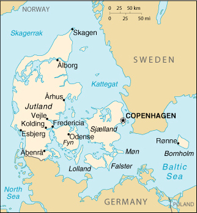

|
Denmark | |
| Introduction Geography People Government Economy Communications Transportation Military Transnational Issues | ||
|  | ||
| Denmark | Introduction | Top of Page |
| Background: | Once the seat of Viking raiders and later a major north European power, Denmark has evolved into a modern, prosperous nation that is participating in the political and economic integration of Europe. So far, however, the country has opted out of some aspects of the European Union's Maastricht Treaty, including the economic and monetary system (EMU) and issues concerning certain internal affairs. |
| Denmark | Geography | Top of Page |
| Location: | Northern Europe, bordering the Baltic Sea and the North Sea, on a peninsula north of Germany (Jutland); also includes two major islands (Sjaeland and Fyn) |
| Geographic coordinates: | 56 00 N, 10 00 E |
| Map references: | Europe |
| Area: |
total:
43,094 sq km
land: 42,394 sq km water: 700 sq km note: includes the island of Bornholm in the Baltic Sea and the rest of metropolitan Denmark (the Jutland Peninsula, and the major islands of Sjaeland and Fyn), but excludes the Faroe Islands and Greenland |
| Area - comparative: | slightly less than twice the size of Massachusetts |
| Land boundaries: |
total:
68 km
border countries: Germany 68 km |
| Coastline: | 7,314 km |
| Maritime claims: |
contiguous zone:
24 NM
continental shelf: 200-m depth or to the depth of exploitation exclusive economic zone: 200 NM territorial sea: 12 NM |
| Climate: | temperate; humid and overcast; mild, windy winters and cool summers |
| Terrain: | low and flat to gently rolling plains |
| Elevation extremes: |
lowest point:
Lammefjord -7 m
highest point: Yding Skovhoej 173 m |
| Natural resources: | petroleum, natural gas, fish, salt, limestone, stone, gravel and sand |
| Land use: |
arable land:
60%
permanent crops: 0% permanent pastures: 5% forests and woodland: 10% other: 25% (1993 est.) |
| Irrigated land: | 4,350 sq km (1993 est.) |
| Natural hazards: | flooding is a threat in some areas of the country (e.g., parts of Jutland, along the southern coast of the island of Lolland) that are protected from the sea by a system of dikes |
| Environment - current issues: | air pollution, principally from vehicle and power plant emissions; nitrogen and phosphorus pollution of the North Sea; drinking and surface water becoming polluted from animal wastes and pesticides |
| Environment - international agreements: |
party to:
Air Pollution, Air Pollution-Nitrogen Oxides, Air Pollution-Sulphur 85, Air Pollution-Sulphur 94, Air Pollution-Volatile Organic Compounds, Antarctic Treaty, Biodiversity, Climate Change, Desertification, Endangered Species, Environmental Modification, Hazardous Wastes, Marine Dumping, Marine Life Conservation, Nuclear Test Ban, Ozone Layer Protection, Ship Pollution, Tropical Timber 83, Tropical Timber 94, Wetlands, Whaling
signed, but not ratified: Air Pollution-Persistent Organic Pollutants, Antarctic-Environmental Protocol, Climate Change-Kyoto Protocol, Law of the Sea |
| Geography - note: | controls Danish Straits (Skagerrak and Kattegat) linking Baltic and North Seas; about one-quarter of the population lives in greater Copenhagen |
| Denmark | People | Top of Page |
| Population: | 5,352,815 (July 2001 est.) |
| Age structure: |
0-14 years:
18.59% (male 510,826; female 484,385)
15-64 years: 66.56% (male 1,804,617; female 1,758,019) 65 years and over: 14.85% (male 331,906; female 463,062) (2001 est.) |
| Population growth rate: | 0.3% (2001 est.) |
| Birth rate: | 11.96 births/1,000 population (2001 est.) |
| Death rate: | 10.9 deaths/1,000 population (2001 est.) |
| Net migration rate: | 1.98 migrant(s)/1,000 population (2001 est.) |
| Sex ratio: |
at birth:
1.06 male(s)/female
under 15 years: 1.05 male(s)/female 15-64 years: 1.03 male(s)/female 65 years and over: 0.72 male(s)/female total population: 0.98 male(s)/female (2001 est.) |
| Infant mortality rate: | 5.04 deaths/1,000 live births (2001 est.) |
| Life expectancy at birth: |
total population:
76.72 years
male: 74.12 years female: 79.47 years (2001 est.) |
| Total fertility rate: | 1.73 children born/woman (2001 est.) |
| HIV/AIDS - adult prevalence rate: | 0.17% (1999 est.) |
| HIV/AIDS - people living with HIV/AIDS: | 4,300 (1999 est.) |
| HIV/AIDS - deaths: | less than 100 (1999 est.) |
| Nationality: |
noun:
Dane(s)
adjective: Danish |
| Ethnic groups: | Scandinavian, Inuit, Faroese, German, Turkish, Iranian, Somali |
| Religions: | Evangelical Lutheran 95%, other Protestant and Roman Catholic 3%, Muslims 2% |
| Languages: |
Danish, Faroese, Greenlandic (an Inuit dialect), German (small minority)
note: English is the predominant second language |
| Literacy: |
definition:
age 15 and over can read and write
total population: 100% male: NA% female: NA% |
| Denmark | Government | Top of Page |
| Country name: |
conventional long form:
Kingdom of Denmark
conventional short form: Denmark local long form: Kongeriget Danmark local short form: Danmark |
| Government type: | constitutional monarchy |
| Capital: | Copenhagen |
| Administrative divisions: |
metropolitan Denmark - 14 counties (amter, singular - amt) and 2 kommunes*; Arhus, Bornholm, Fredericksberg*, Frederiksborg, Fyn, Kobenhavn, Kobenhavns*, Nordjylland, Ribe, Ringkobing, Roskilde, Sonderjylland, Storstrom, Vejle, Vestsjalland, Viborg
note: see separate entries for the Faroe Islands and Greenland, which are part of the Kingdom of Denmark and are self-governing administrative divisions |
| Independence: | first organized as a unified state in 10th century; in 1849 became a constitutional monarchy |
| National holiday: | none designated; Constitution Day, 5 June is generally viewed as the National Day |
| Constitution: | 1849 was the original constitution; there was a major overhaul 5 June 1953, allowing for a unicameral legislature and a female chief of state |
| Legal system: | civil law system; judicial review of legislative acts; accepts compulsory ICJ jurisdiction, with reservations |
| Suffrage: | 18 years of age; universal |
| Executive branch: |
chief of state:
Queen MARGRETHE II (since 14 January 1972); Heir Apparent Crown Prince FREDERIK, elder son of the monarch (born 26 May 1968)
head of government: Prime Minister Poul Nyrup RASMUSSEN (since 25 January 1993) cabinet: Cabinet appointed by the prime minister and approved by Parliament elections: none; the monarch is hereditary; prime minister appointed by the monarch |
| Legislative branch: |
unicameral Parliament or Folketing (179 seats, including 2 from Greenland and 2 from the Faroe Islands; members are elected by popular vote on the basis of proportional representation to serve four-year terms)
elections: last held 11 March 1998 (next to be held by March 2002) election results: percent of vote by party - NA%; seats by party - progovernment parties: Social Democratic Party 65, Socialist People's Party 13, Social Liberal Party 7, Red-Green Unity List 5; opposition: Liberal Party 43, Conservative Party 17, Danish People's Party 13, Center Democratic Party 8, Christian People's Party 4, Progress Party 4; seats by party as of 1 January 2001: government coalition parties - Social Democrats 63, Social Liberals 7; pro-government parties - Socialist People's Party 13, Unity List 5; opposition - Liberals 42, Conservatives 16, Danish People's Party 13, Center Democrats 8, Christian People's Party 4, Progress Party 4 (now named Freedom 2000); does not include the 4 overseas seats |
| Judicial branch: | Supreme Court (judges are appointed by the monarch for life) |
| Political parties and leaders: | Center Democratic Party [Mimi JAKOBSEN]; Christian People's Party [Jann SJURSEN]; Conservative Party (sometimes known as Conservative People's Party) [Bendt BENDTSEN]; Danish People's Party [Pia KJAERSGAARD]; Liberal Party [Anders Fogh RASMUSSEN]; Progress Party (now named Freedom 2000) [Kim BEHNKE]; Social Democratic Party [Poul Nyrup RASMUSSEN]; Social Liberal Party (sometimes called the Radical Left) [Marianne JELVED, leader; Johannes LEBECH, chairman]; Socialist People's Party [Holger K. NIELSEN]; Red-Green Unity List (bloc includes Left Socialist Party, Communist Party of Denmark, Socialist Workers' Party) [collective leadership] |
| Political pressure groups and leaders: | NA |
| International organization participation: | AfDB, AsDB, Australia Group, BIS, CBSS, CCC, CE, CERN, EAPC, EBRD, ECE, EIB, ESA, EU, FAO, G- 9, IADB, IAEA, IBRD, ICAO, ICC, ICFTU, ICRM, IDA, IEA, IFAD, IFC, IFRCS, IHO, ILO, IMF, IMO, Inmarsat, Intelsat, Interpol, IOC, IOM, ISO, ITU, MONUC, NATO, NC, NEA, NIB, NSG, OAS (observer), OECD, OPCW, OSCE, PCA, UN, UNCTAD, UNESCO, UNHCR, UNIDO, UNIKOM, UNMEE, UNMIBH, UNMIK, UNMOGIP, UNMOP, UNMOT, UNOMIG, UNTAET, UNTSO, UPU, WEU (observer), WHO, WIPO, WMO, WTrO, ZC |
| Diplomatic representation in the US: |
chief of mission:
Ambassador Ulrik Andreas FEDERSPIEL
chancery: 3200 Whitehaven Street NW, Washington, DC 20008 telephone: [1] (202) 234-4300 FAX: [1] (202) 328-1470 consulate(s) general: Chicago, Los Angeles, and New York |
| Diplomatic representation from the US: |
chief of mission:
Ambassador Stuart BERNSTEIN
embassy: Dag Hammarskjolds Alle 24, 2100 Copenhagen mailing address: PSC 73, APO AE 09716 telephone: [45] 35 55 31 44 FAX: [45] 35 38 96 16 |
| Flag description: | red with a white cross that extends to the edges of the flag; the vertical part of the cross is shifted to the hoist side, and that design element of the Dannebrog (Danish flag) was subsequently adopted by the other Nordic countries of Finland, Iceland, Norway, and Sweden |
| Denmark | Economy | Top of Page |
| Economy - overview: | This thoroughly modern market economy features high-tech agriculture, up-to-date small-scale and corporate industry, extensive government welfare measures, comfortable living standards, and high dependence on foreign trade. Denmark is a net exporter of food and energy and has a comfortable balance of payments surplus. The center-left coalition government has reduced the formerly high unemployment rate and attained a budget surplus as well as followed the previous government's policies of maintaining low inflation and a stable currency. The coalition has lowered marginal income tax rates and raised environmental taxes thus maintaining overall tax revenues. Problems of bottlenecks, and longer term demographic changes reducing the labor force, are being addressed through labor market reforms. The government has been successful in meeting, and even exceeding, the economic convergence criteria for participating in the third phase (a common European currency) of the European Monetary Union (EMU), but Denmark, in a September 2000 referendum, reconfirmed its decision not to join the 11 other EU members in the euro. Even so, the Danish currency remains pegged to the euro. |
| GDP: | purchasing power parity - $136.2 billion (2000 est.) |
| GDP - real growth rate: | 2.8% (2000 est.) |
| GDP - per capita: | purchasing power parity - $25,500 (2000 est.) |
| GDP - composition by sector: |
agriculture:
3%
industry: 25% services: 72% (2000 est.) |
| Population below poverty line: | NA% |
| Household income or consumption by percentage share: |
lowest 10%:
2%
highest 10%: 24% (2000 est.) |
| Inflation rate (consumer prices): | 2.9% (2000 est.) |
| Labor force: | 2.856 million (2000 est.) |
| Labor force - by occupation: | services 79%, industry 17%, agriculture 4% (2000 est.) |
| Unemployment rate: | 5.3% (2000) |
| Budget: |
revenues:
$52.9 billion
expenditures: $51.3 billion, including capital expenditures of $500 million (2001 est.) |
| Industries: | food processing, machinery and equipment, textiles and clothing, chemical products, electronics, construction, furniture, and other wood products, shipbuilding, windmills |
| Industrial production growth rate: | 3% (2000 est.) |
| Electricity - production: | 37.885 billion kWh (1999) |
| Electricity - production by source: |
fossil fuel:
88.4%
hydro: 0.07% nuclear: 0% other: 11.53% (1999) |
| Electricity - consumption: | 32.916 billion kWh (1999) |
| Electricity - exports: | 7.28 billion kWh (1999) |
| Electricity - imports: | 4.963 billion kWh (1999) |
| Agriculture - products: | grain, potatoes, rape, sugar beets; pork and beef, dairy products; fish |
| Exports: | $50.8 billion (f.o.b., 2000) |
| Exports - commodities: | machinery and instruments, meat and meat products, dairy products, fish, chemicals, furniture, ships, windmills |
| Exports - partners: | EU 66.5% (Germany 20.1%, Sweden 11.7%, UK 9.6%, France 5.3%, Netherlands 4.7%), Norway 5.8%, US 5.4% (1999) |
| Imports: | $43.6 billion (f.o.b., 2000) |
| Imports - commodities: | machinery and equipment, raw materials and semimanufactures for industry, chemicals, grain and foodstuffs, consumer goods |
| Imports - partners: | EU 72.1% (Germany 21.6%, Sweden 12.4%, UK 8.0%, Netherlands 8.0%, France 5.8%), Norway 4.2%, US 4.5% (1999) |
| Debt - external: | $21.7 billion (2000) |
| Economic aid - donor: | ODA, $1.63 billion (1999) |
| Currency: | Danish krone (DKK) |
| Currency code: | DKK |
| Exchange rates: | Danish kroner per US dollar - 7.951 (January 2001), 8.083 (2000), 6.976 (1999), 6.701 (1998), 6.604 (1997), 5.799 (1996); note - the Danes rejected the Euro in a 28 September 2000 referendum |
| Fiscal year: | calendar year |
| Denmark | Communications | Top of Page |
| Telephones - main lines in use: | 4.785 million (1997) |
| Telephones - mobile cellular: | 1,444,016 (1997) |
| Telephone system: |
general assessment:
excellent telephone and telegraph services
domestic: buried and submarine cables and microwave radio relay form trunk network, 4 cellular mobile communications systems international: 18 submarine fiber-optic cables linking Denmark with Norway, Sweden, Russia, Poland, Germany, Netherlands, UK, Faroe Islands, Iceland, and Canada; satellite earth stations - 6 Intelsat, 10 Eutelsat, 1 Orion, 1 Inmarsat (Blaavand-Atlantic-East); note - the Nordic countries (Denmark, Finland, Iceland, Norway, and Sweden) share the Danish earth station and the Eik, Norway, station for worldwide Inmarsat access (1997) |
| Radio broadcast stations: | AM 2, FM 355, shortwave 0 (1998) |
| Radios: | 6.02 million (1997) |
| Television broadcast stations: | 26 (plus 51 repeaters) (1998) |
| Televisions: | 3.121 million (1997) |
| Internet country code: | .dk |
| Internet Service Providers (ISPs): | 13 (2000) |
| Internet users: | 2.3 million (2000) |
| Denmark | Transportation | Top of Page |
| Railways: |
total:
2,859 km (508 km privately owned and operated)
standard gauge: 2,859 km 1.435-m gauge (600 km electrified; 760 km double track) (1998) |
| Highways: |
total:
71,474 km
paved: 71,474 km (including 880 km of expressways) unpaved: 0 km (1999) |
| Waterways: | 417 km |
| Pipelines: | crude oil 110 km; petroleum products 578 km; natural gas 700 km |
| Ports and harbors: | Abenra, Alborg, Arhus, Copenhagen, Esbjerg, Fredericia, Kolding, Odense, Roenne (Bornholm), Vejle |
| Merchant marine: |
total:
342 ships (1,000 GRT or over) totaling 6,073,489 GRT/8,027,002 DWT
ships by type: bulk 10, cargo 128, chemical tanker 27, container 76, liquefied gas 26, livestock carrier 6, petroleum tanker 22, railcar carrier 1, refrigerated cargo 13, roll on/roll off 23, short-sea passenger 7, specialized tanker 3 note: includes some foreign-owned ships registered here as a flag of convenience: Finland 1 (2000 est.) |
| Airports: | 119 (2000 est.) |
| Airports - with paved runways: |
total:
28
over 3,047 m: 2 2,438 to 3,047 m: 7 1,524 to 2,437 m: 4 914 to 1,523 m: 12 under 914 m: 3 (2000 est.) |
| Airports - with unpaved runways: |
total:
91
1,524 to 2,437 m: 1 914 to 1,523 m: 7 under 914 m: 83 (2000 est.) |
| Denmark | Military | Top of Page |
| Military branches: | Royal Danish Army, Royal Danish Navy, Royal Danish Air Force, Home Guard |
| Military manpower - military age: | 18 years of age |
| Military manpower - availability: | males age 15-49: 1,292,619 (2001 est.) |
| Military manpower - fit for military service: | males age 15-49: 1,106,094 (2001 est.) |
| Military manpower - reaching military age annually: | males: 29,212 (2001 est.) |
| Military expenditures - dollar figure: | $2.47 billion (FY99) |
| Military expenditures - percent of GDP: | 1.4% (FY99) |
| Denmark | Transnational Issues | Top of Page |
| Disputes - international: | Rockall continental shelf dispute involving Iceland and the UK (Ireland and the UK have signed a boundary agreement in the Rockall area); dispute with Iceland over the Faroe Islands fisheries median line boundary within 200 NM; disputes with Iceland, the UK, and Ireland over the Faroe Islands continental shelf boundary outside 200 NM |
{kind=link}